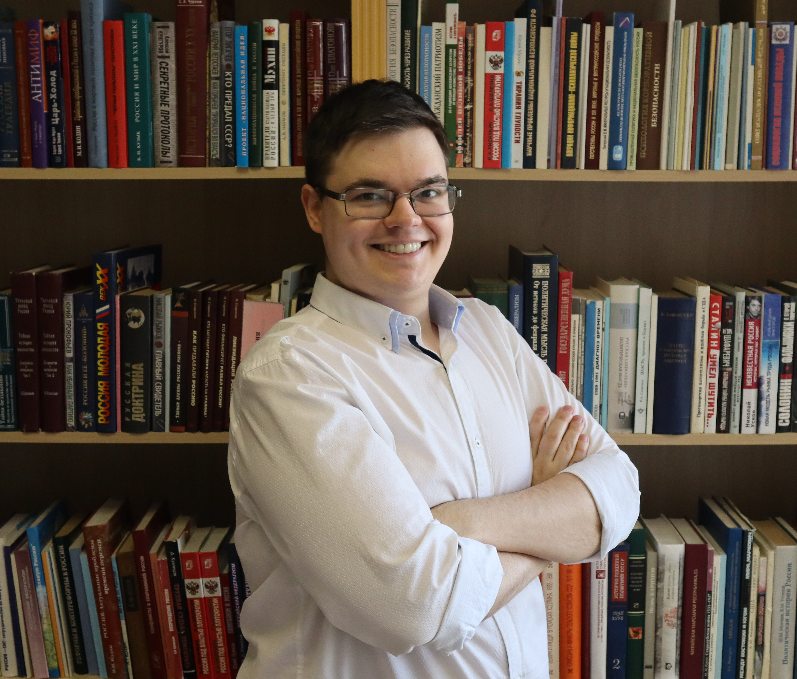

СИТКОВСКИЙ
АРСЕНИЙ
МИХАЙЛОВИЧ
ARSENIY M.
SITKOVSKIY
Демограф, экономгеограф, исследователь пространственного развития и цифровых ГИС-инструментов мониторинга. Работаю на стыке академической демографии, региональной экономики, стратегического планирования и прикладной геоаналитики.
Demographer, economic geographer and researcher of spatial development and digital GIS-based monitoring. My work connects academic demography, regional economics, strategic planning and applied geoanalytics.
Профессиональный профиль
Professional profile
Научный сотрудник Института социальной демографии ФНИСЦ РАН, младший научный сотрудник и преподаватель РУДН. Автор методики формирования системы опорных населённых пунктов, участник грантов РФФИ, РНФ и РУДН, разработчик муниципальных стратегий пространственного и социально-экономического развития.
Research fellow at the Institute of Social Demography, FCTAS RAS, and researcher/lecturer at RUDN University. Author of the methodology for identifying support settlements, participant in RFBR, RSF and RUDN research grants, and contributor to municipal spatial and socio-economic development strategies.
- 2018 — бакалавриат РАНХиГС, 38.03.04 «Государственное и муниципальное управление», диплом с отличием.
- 2020 — магистратура РАНХиГС, 38.04.04 «Государственное и муниципальное управление», диплом с отличием.
- 2021–2022 — профессиональная переподготовка Master of Public Policy: «Управление проектами пространственного развития».
- 2025 — профессиональная переподготовка «Демография» в ФНИСЦ РАН.
- 2018 — Bachelor’s degree with honours, RANEPA, State and Municipal Administration.
- 2020 — Master’s degree with honours, RANEPA, State and Municipal Administration.
- 2021–2022 — professional retraining programme Master of Public Policy: Management of Spatial Development Projects.
- 2025 — professional retraining in Demography at FCTAS RAS.
- Автор курса лекций «Введение в специальность Государственное и муниципальное управление» для бакалавров РУДН.
- Соавтор курса «Пространственная демография» для магистрантов кафедры территориального планирования им. В.Л. Глазычева РАНХиГС.
- Автор онлайн-курса Stepik «EverGIS: создай свою карту с нуля».
- Преподаватель модулей ДПО по демографической экспертизе, демографическим базам данных, ГИС, геоаналитике и пространственному демографическому анализу.
- Author of the lecture course “Introduction to State and Municipal Administration” for RUDN undergraduate students.
- Co-author of the “Spatial Demography” course for master’s students at RANEPA.
- Author of the Stepik online course “EverGIS: create your own map from scratch”.
- Lecturer in professional development modules on demographic expertise, demographic databases, GIS, geoanalytics and spatial demographic analysis.
- РФФИ 19-010-00964 «Моделирование и визуализация сценариев пространственного развития трансграничного макрорегиона на примере Урала и Северного Казахстана».
- РФФИ 21-011-31803 «Государственная политика России по развитию крупных агломераций в условиях демографического сжатия: сценарии и вызовы».
- РНФ 24-28-01314 «Репродуктивная преемственность поколений...».
- РНФ 25-78-30004 «Цифровая демографическая обсерватория...».
- Гранты РУДН 056128-0-000 и 056127-0-000 по тематике демографической безопасности и пространственного развития.
- Участие в 10 НИР, зарегистрированных в ЕГИСУ НИОКТР.
- RFBR 19-010-00964 on modelling and visualising spatial development scenarios of a cross-border macroregion.
- RFBR 21-011-31803 on Russian agglomeration policy under demographic shrinkage.
- RSF 24-28-01314 on intergenerational reproductive continuity and large families.
- RSF 25-78-30004 “Digital Demographic Observatory”.
- RUDN grants 056128-0-000 and 056127-0-000 on demographic security and spatial development.
- Participant in 10 R&D projects registered in the national R&D information system.
Автор методики формирования системы опорных населённых пунктов, утверждённой распоряжением Правительства РФ от 23 декабря 2022 г. № 4132-р и используемой Министерством сельского хозяйства Российской Федерации. Один из разработчиков пяти действующих стратегий социально-экономического и пространственного развития муниципалитетов Челябинской области.
Author of the methodology for forming a system of support settlements, approved by Government Order No. 4132-r and used by the Ministry of Agriculture of the Russian Federation. Contributor to five active municipal spatial and socio-economic development strategies in Chelyabinsk Oblast.